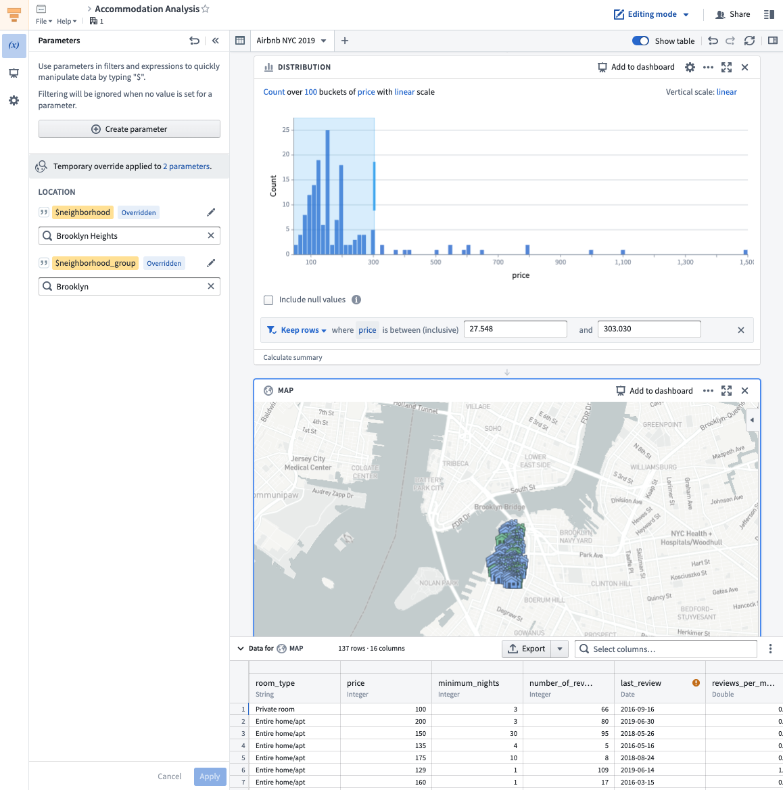
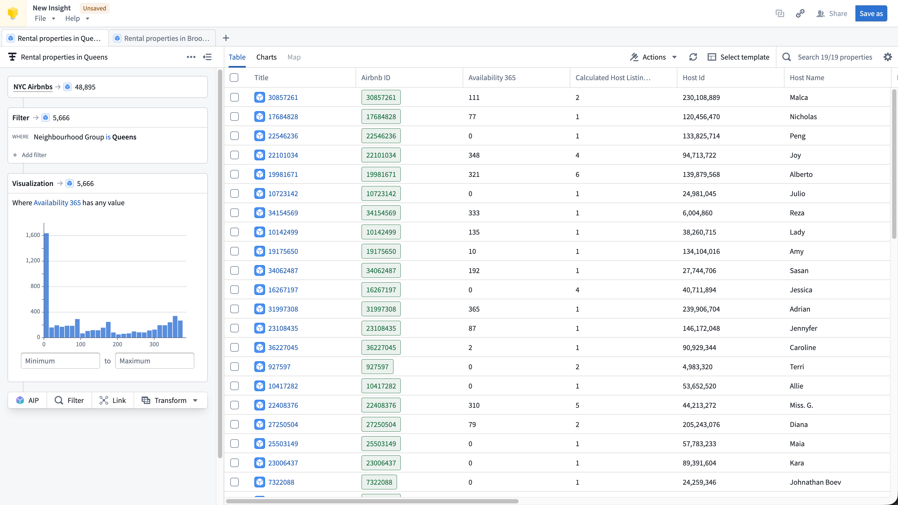
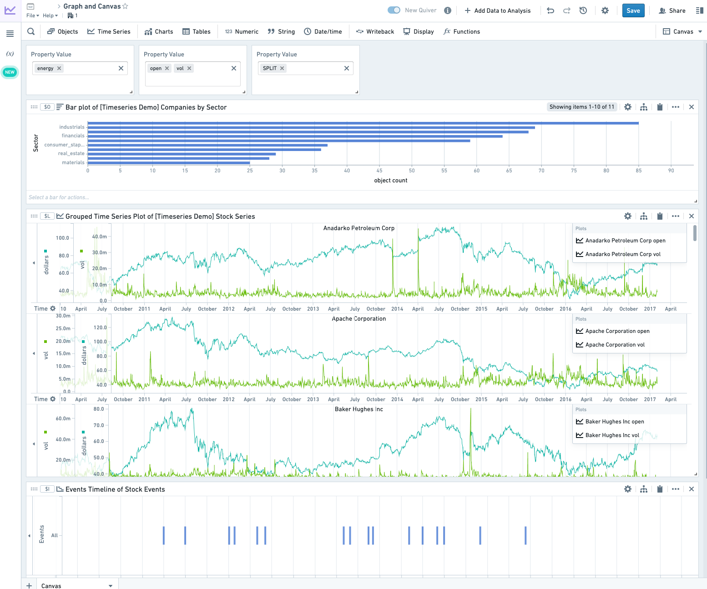
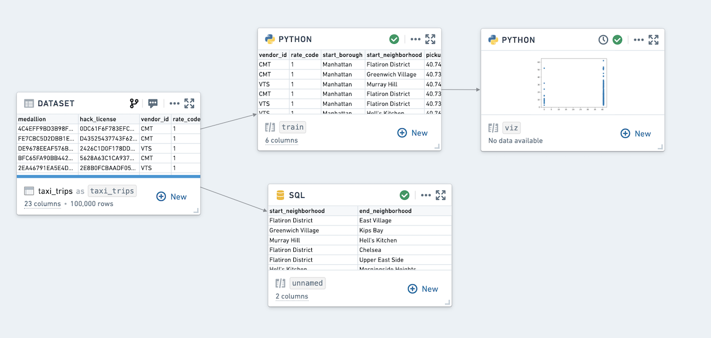

Types of analysis
The Foundry analytical suite supports both point-and-click analysis (no-code or low-code) and code-based data analysis, with tools optimized for different analysis and source types as well as tools for dashboarding and reporting.
A summary of tools and supported workflows is below:
|
Point-and-click analysis |
Code-based analysis |
| Tabular data |
Contour |
Code Workbook |
| Object data (Ontology) |
Insight, Quiver |
|
| Time series data |
Quiver |
Code Workbook |
| Map (geospatial) data |
Map, Contour, Quiver, Insight |
|
Point-and-click analysis
Foundry provides several tools for point-and-click analysis: Contour, Insight, and Quiver.
- Contour enables data analysis on tabular data at scale.
- Insight is designed for operational users to analyze the ontology and create object sets.
- Quiver supports advanced ontology analysis, dashboard creation, and time series data.
Additionally, Object Explorer is a search and discovery tool for the Ontology layer that supports searching across the ontology and finding individual objects.
Contour, Insight, and Quiver allow you to:
- Visualize, filter, and transform data without code.
- Leverage expression languages for more advanced transformations and aggregations.
- Organize complex analyses.
- Create interactive dashboards that allow others to explore and investigate data in a guided, structured way.
- Share analyses with colleagues.
Learn more below about the specific use cases for which these tools are optimized.
Contour

Contour is a good fit for analytical use cases where:
- Some or all of the data you want to use is not mapped in the Ontology: In general, we recommend using the Ontology layer whenever possible, but there are some cases where this may not be appropriate, such as a one-time upload that will not be cleaned or reused. Not all data is intended for the ontology layer. For example Contour can be useful for looking at intermediary datasets in pipelines.
- You need to operate on a very large dataset: Contour was designed to facilitate analytical operations on very large datasets, while Quiver supports object aggregations of up to 50,000 rows.
- You want to share your analysis results as a new dataset for use in other Foundry tools. Learn more about saving results as datasets.
- You want to build parameterized analyses to easily switch between different views of the data and results.
Learn how to get started with Contour.
Insight

Insight is a good fit for analytical use cases where:
- Your data is mapped in the Ontology: Insight leverages Ontology data such as object types, interfaces, link types, and actions.
- You need to perform ad-hoc analysis without code: The visual analysis path makes it easy to build complex queries step by step, supporting both simple and complex drill down workflows.
- You want to explore relationships between objects: The Link step lets you follow links to discover connected objects across the Ontology as well as filter data based on linked properties.
- You want to write data back to the Ontology: Insight supports creating, updating, and deleting objects from your analysis results.
Learn how to get started with Insight.
Quiver

Quiver is a good fit for analytical use cases where:
- Your data is mapped in the Ontology: Links between objects are natively represented in the Ontology, so Quiver users do not have to perform joins or worry about identifying primary or foreign keys. Joins represented as links are returned by performing a Search Around on an object or object set to retrieve any linked objects.
- You are working with time series data: Quiver has been optimized to work with time series data. Quiver includes a specific time series library with sensor and signal processing functions and can be backed by a proprietary time series database that has been optimized for specific operations on high frequency signals. See Time series analysis for more information.
- You want to embed your findings into other object-aware applications: Quiver dashboards can be embedded into operational applications such as Workshop.
- You want to write back to the Ontology: Quiver can be used to write analytical decisions back to the Ontology using an Action. This allows you to capture analytical conclusions immediately for use by others.
Learn how to get started with Quiver.
Object Explorer
Users can conduct simple object-based analytical workflows in Object Explorer. Object Explorer is a search and analysis tool for answering questions about anything in the Ontology layer. Users can visually compose search queries in Object Explorer, ranging from simple filters to Search-arounds to find objects of interest. Object Explorer is a good fit for analytical workflows in which:
- You want to search terms across your Ontology: Object Explorer provides a search entry point to find objects or object types across the ontology. The search results page supports viewing object instance and object type results.
- You want to explore an object type and its properties: Object Explorer is a great starting point for finding relevant object data and looking at Object Views.
- Your end goal is creating a list of relevant objects (object set): Object Explorer enables creating object explorations and object lists to share with others or use in other applications like Quiver or Insight for further analysis. Learn more about explorations and object lists.
Learn how to get started with Object Explorer.
Code-based analysis
Code Workbook
Code Workbook is an application that allows users to analyze and transform data using an intuitive graphical interface.

Code Workbook was designed with these principles in mind:
- Iteration speed: Users can quickly test and refine logic for transformation and visualization in order to produce useful results.
- Low barrier to entry: Code Workbook's graphical interface and support for using pre-authored logic were designed to enable easy onboarding of users of varying technical skill.
- Collaboration: Disparate groups of users can share logic and work together on a single analysis in Code Workbook.
- Model creation: Users can iterate on Foundry Models in Code Workbook, and easily view Model stages and metrics. Models can then be submitted to Modeling objectives and used operationally.
- Platform interoperability: Users can productionize their findings across the platform by adding visualizations to Notepads and promoting production-ready pipelines to Code Repository.
Key features of Code Workbook include:
- An interactive console for rapid iteration on transformation logic and ad-hoc data exploration.
- Visualization support to create detailed, interactive images with commonly used packages (Matplotlib, Plotly, Seaborn).
- Templates that enable reuse of complex and domain-specific logic through a simple interface.
- Support for multiple languages (Python, SQL, R) for code and templates to allow users to select the best language for an analysis and leverage multiple languages in a single analysis.
- Branching to facilitate collaboration by isolating usersâ changes from one another.
- An intuitive user interface that makes it easy to customize the Spark environment, set input types for transforms, and view relationships between nodes.
Learn how to get started with Code Workbook.
:::callout{theme="neutral" title="Which tool should I use to build pipelines?"}
Code Workbook is not optimized for building production pipelines. If you are building or maintaining production pipelines, use the Code Repositories application, which includes version history, branching and pull requests, and other functionality essential for robust pipelines. More information can be found in this comparison of Foundryâs tools for writing code-based transformations.
:::
Time series analysis
Foundry provides advanced end-to-end tooling for time series storage, monitoring, transformation, analysis, and writeback. Workflows from historical performance analysis to trend and correlation analysis to forecasting can make use of Foundry's time series capabilities.
Both Quiver and Code Workbook support time series analysis for no-code and code-based analysis respectively. Learn how to get started with time series.
Map-based (geospatial) analysis
Geospatial data is often a key input for Foundry users seeking to connect analytics with operations. Foundry streamlines geospatial data transformations and analytics and can enable map-based workflows.
The Map application is a powerful application for geospatial analysis. Also, Contour and Quiver include map widgets for use in analyses that include geospatial data.
Dashboarding
Both Contour and Quiver support building interactive dashboards based on analytical results. Learn more about dashboarding.
Reporting
Notepad is Foundryâs next-gen reporting tool and is recommended for the majority of reporting use cases. Learn more about reporting.